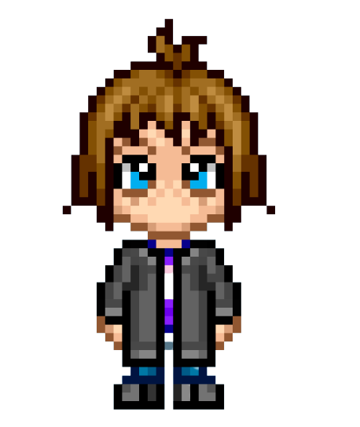
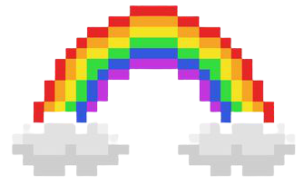

what i've been up to
technology experience
- Union Pacific - Information Technology Intern
- Launchcode - Teaching Assistant
- assisted 22 students in debugging coding projects and answered questions on JavaScript, HTML, CSS, Java, and fundamental programming concepts during 2 weekly classes and weekly office hours
- Google - Computer Science Summer Institute Student
- learned the p5.js library from googlers and made a project
- Kode with Klossy - Web Development Scholar
- learned HTML, CSS, and JavaScript; made a project on environmental racism in Saint Louis
- Kode with Klossy - iOS Development Scholar
- learned Swift; made a project called Clueless that teaches its users about how to limit their effect on climate change
student involvement
- Mizzou Computing Association - Data Science Lead
- Mizzou Computing Association - Web Developer
- Lab for Information Technology Evaluation - Lab Manager
- conducted research on bias in Machine Learning and Artificial Intelligence
- PickHacks - Marketing Organizer
- created weekly social media posts; coordinated and ran a workshop on web scraping
- TechTogether - Brand Ambassador
- promoted the TechTogether organization through social media posts on 3 platforms and 15 online communities; increased participation at 4 TechTogether hackathons by 15%
- TechTogether - Marketing Organizer
- increased hackathon attendance by 20% through weekly social media marketing content
education
- Missouri University of Science and Technology
- I spent my freshman year here, where I took a few relavent classes - ALgorithms and Applications with Java, Human Computer Interaction, Calculus, and Web and Digital Media Development - and got pretty involved on campus. However, I ultimately decided that the combination of business and technology in the Information Science & Technology program wasn't the best fit for me.